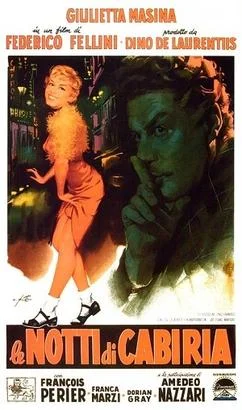

Explore film ↗
Explore film ↗Amarcord
Federico Fellini
DIRECTOR PROFILE
Federico Fellini (Italian: ; 20 January 1920 – 31 October 1993) was an Italian film director and screenwriter known for his distinctive style that blends fantasy and baroque images with earthiness.

LIFE & CAREER
Federico Fellini (Italian: ; 20 January 1920 – 31 October 1993) was an Italian film director and screenwriter known for his distinctive style that blends fantasy and baroque images with earthiness. Recognized as one of the greatest and most influential filmmakers of all time, his films rank highly in critical polls such as that of Cahiers du Cinéma and Sight & Sound, which lists his 1963 film 8½ as the 10th-greatest film of all time. Fellini's best-known films include I Vitelloni (1953), La Strada (1954), Nights of Cabiria (1957), La Dolce Vita (1960), 8½ (1963), Juliet of the Spirits (1965), the "Toby Dammit" segment of Spirits of the Dead (1968), Fellini Satyricon (1969), Roma (1972), Amarcord (1973), and Fellini's Casanova (1976).
Adapted excerpt from Wikipedia, CC BY-SA 4.0. Pronunciation notes omitted.
Read the full biographyImage: Italiamia. Source & rights: Public domain ↗.
Profile reference: Director background ↗
Open this director checklist ↗
A selection of this director’s films available in the archive.
Explore film ↗Federico Fellini

Explore film ↗Federico Fellini
 Explore film ↗
Explore film ↗Federico Fellini